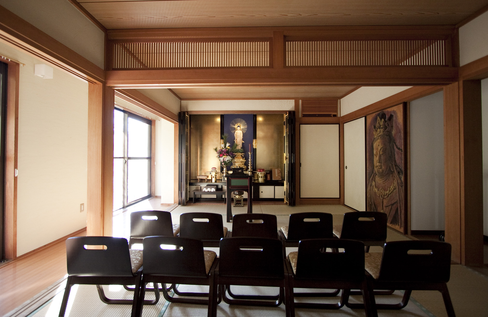
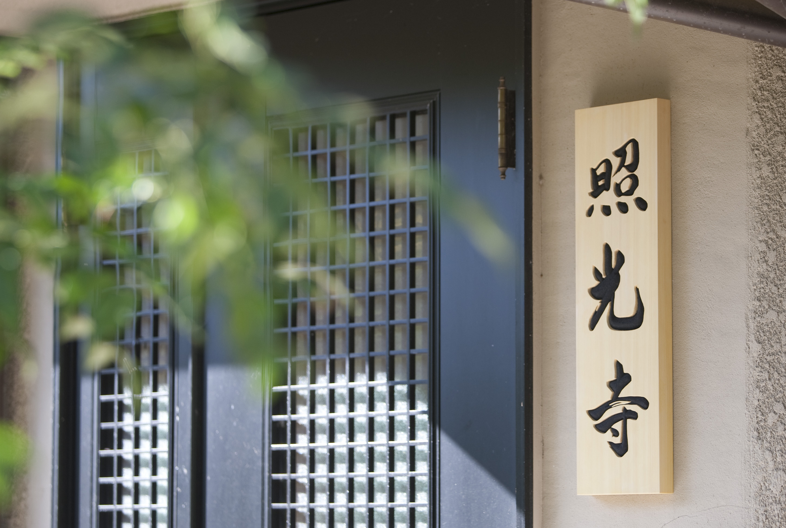
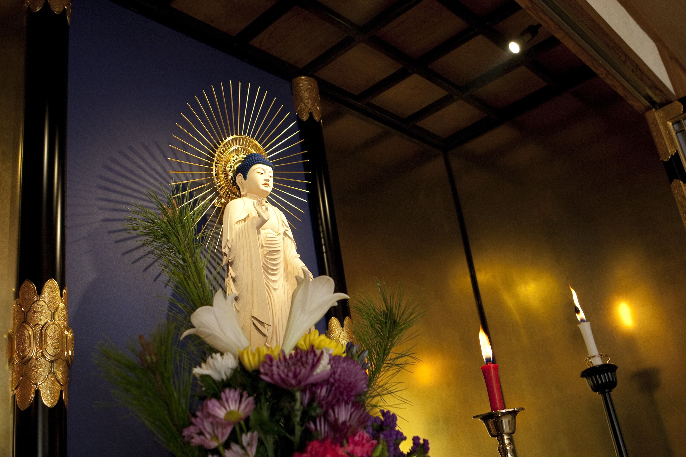

真宗大谷派でのご葬式でよろしければ、どのような方でもご葬儀させていただきます。
どうぞお気軽にご相談ください。

本堂内観

寺号標・入口（外観）
かたやま としはる
住職
実家はお寺ではないのですが、思うところがあり大谷大学文学部仏教学科に進学、在学中に19歳で得度。平成18年より現在の活動を始め、平成26年10月にお寺が完成しました。
浄土真宗の葬儀・法要は阿弥陀如来の慈悲を仰ぎ、阿弥陀如来の本願力によってふたび浄土で会えるという思いを確かめ合う場と考えています。どなたでもお気軽にご相談ください。
京仏師 冨田 珠雲 作

照光寺様のご本尊は東本願寺様式の衣の着衣、お姿も正式に両足を揃えて真っ直ぐにお立ちになっている阿弥陀如来像です。
樹齢三百年以上の木曽松を使用してご縁のある方に鑿（のみ）入れをして頂き、胎内にはその時の署名の巻紙が入っております。
御台座は東本願寺様の六角蒼き蓮華七重座で、木地の上に本漆を塗り、金箔を押してあります。
「全ての行程を京都で丹念に仕上げた御本尊、住職の思い、門徒の協力をもって千年維持して頂きますと、必ず国の宝となる事でしょう。」
— 京仏師 冨田 珠雲
家の菩提寺がわからない方や、お寺へのお礼を安く済ませたい方などを対象にご葬儀でのお勤めをさせていただいております。どなたでもお気軽にご相談ください。
内容はご予算に応じて組み合わせることができます。
※初七日法要と還骨勤行を一緒に行う場合は「白骨の御文」を最後に加えます。
※読経時間 約35分 ／ 会葬者の焼香が多い場合はその間「念仏」となります。
※参加僧侶が必要な場合は加えることができます。（通常は全て1名で行います）
※参勤僧侶追加などの場合によって金額が異なる場合があります。
所在地
〒655-0861 神戸市垂水区下畑町字柏谷262-4
お気軽にご相談ください。法要やご葬儀のことなど、いつでも丁寧に対応いたします。